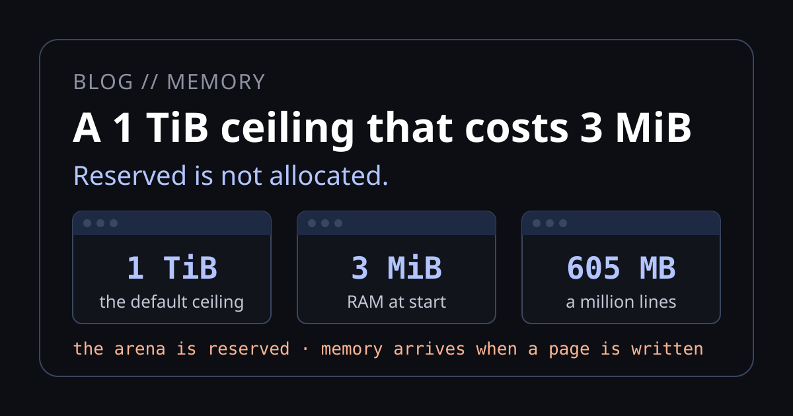

A 1 TiB ceiling that costs 3 MiB

A Neper program used to stop at 1 GiB unless it was built with a flag, and the compiler was a Neper program like any other. A million-line build failed with an arena error, though it needs only 605 MB of RAM. Now a program takes what it needs, up to a 1 TiB ceiling, on Windows, Linux and macOS, and gives it back. That costs nothing, because the size of an arena was never a cost. It is a ceiling on addresses, and memory arrives when a page is first written.
The error
The workload is sc1m, the generated million-line program from A million lines, eight compilers: 1,000 modules, 82,595 functions, 920,554 lines. That post had to build the compiler with --arena 4g first. This is why, with a release compiler built with the old 1 GiB ceiling:
$ neper-1g emit-executable src/main.e REPO x64 windows sc1m.exe --release --unchecked --cpu x64-v3 -j 8
error[E-TYPE-9999]: resource limit: the compiler's arena is exhausted; the program is larger than this compiler was built to holdAnd this is the same command with the same compiler source, built with the new default:
$ neper emit-executable src/main.e REPO x64 windows sc1m.exe --release --unchecked --cpu x64-v3 -j 8
executable written
$ ./sc1m.exe
108474335It took 3.6 seconds and the answer is the one the generator expected. The peak working set was 605 MB. The old build did not run out of memory. It ran out of a number.
One arena, in the open
Neper has no garbage collector and no hidden heap. A program's memory is an arena, a block with a base, a capacity and an offset, and main receives it as its first parameter. A function that allocates takes the arena as an argument, so you can see from a signature whether it can allocate at all.
fn main(a: *mem.Arena, args: []str) -> err {
let (block, block_error) = mem.alloc[u8](a, 4096usize)
if block_error != ok { ret block_error }
...
}mem.alloc is a bump and a bounds compare. mem.mark and mem.reset free a whole phase at once. Running out is an ordinary error value, mem.Exhausted, and the program decides what to do with it.
Because an arena hands out raw pointers, it cannot be moved to a bigger block when it fills up. Nothing moves under a pointer in Neper. So an arena that can grow needs one unbroken range of addresses, set aside before the first allocation.
Reserved is not allocated
That range is what the startup code asks for, and asking for addresses is nearly free. The operating system records the range and hands over no memory. Real pages arrive the first time the program writes to them.
Windows
The arena is reserved, not committed. The first write to an uncommitted page faults, and a handler the runtime installs commits the 1 MiB chunk around it and resumes the instruction.
Linux
The arena is an anonymous mapping with MAP_NORESERVE. The kernel backs each page on first touch, so a ceiling larger than the machine is not refused.
Both of those were already true. What changed is the default, from 1 GiB to 1 TiB, in one place in the compiler that every hosted linker reads, and what the startup does if the host says no, which comes below. --arena still sets the size either way.
A program that grows
This program allocates six blocks of 256 MiB and writes one byte to every page, so all of it becomes real. There is no flag anywhere. The whole source is 39 lines; this is its loop:
while grown < BLOCKS {
let (block, block_error) = mem.alloc[u8](a, BLOCK)
if block_error != ok { ret block_error }
var at = 0usize
while at < BLOCK {
block[at] = 1u8
at += PAGE
}
grown += 1usize
try report(a, "grew")
}$ neper emit-executable grow.e . x64 windows grow.exe --release
$ ./grow.exe
start: ceiling 1048576 MiB, used 0 MiB, peak RAM 3 MiB
grew: ceiling 1048576 MiB, used 256 MiB, peak RAM 259 MiB
grew: ceiling 1048576 MiB, used 512 MiB, peak RAM 515 MiB
grew: ceiling 1048576 MiB, used 768 MiB, peak RAM 771 MiB
grew: ceiling 1048576 MiB, used 1024 MiB, peak RAM 1027 MiB
grew: ceiling 1048576 MiB, used 1280 MiB, peak RAM 1283 MiB
grew: ceiling 1048576 MiB, used 1536 MiB, peak RAM 1539 MiB
first byte is still 42The program starts at 3 MiB under a 1 TiB ceiling, and RAM follows what it uses. It walks straight past the old 1 GiB limit. Its first allocation is still where it was, with what it held. Linux prints the same lines with slightly lower peaks: 1 MiB at the start and 1536 MiB at the end.
Allocating is not touching
A page costs nothing until it is written, so a large table that is mostly empty stays cheap. This one asks for 16 GiB, more than the machine has, and writes to 1,000 places:
let (table, table_error) = mem.alloc[u8](a, SIZE)
if table_error != ok { ret table_error }
var n = 0usize
while n < WRITES {
table[n * (SIZE / WRITES)] = 1u8
n += 1usize
}$ ./sparse.exe
allocated 16384 MiB, wrote 1000 places, peak RAM 7 MiBLinux reports 3 MiB. There is a catch on Windows. RAM is 7 MiB, but the commit charge, what counts against RAM plus pagefile, peaked at 1,006 MB. Each scattered write committed a whole 1 MiB chunk. On Windows, then, a program that touches memory sparsely pays for it in commit, though not in RAM.
Giving memory back
A long-running loop should not climb toward a ceiling at all. mem.mark notes the offset and mem.reset returns to it, so a frame's scratch memory is the next frame's scratch memory. This one allocates 1 MiB per frame for ten thousand frames:
let start = mem.mark(a)
var frame = 0usize
while frame < FRAMES {
try draw(a)
mem.reset(a, start)
frame += 1usize
}$ ./frames.exe
allocated 10000 MiB in total, used now 0 MiB, peak RAM 4 MiBThat is 10 GB of allocations in 4 MiB of RAM, with a peak commit of 1 MB. Linux reports a peak of 1 MiB.
Reusing memory is half of the job. A server that handles one huge request should not keep that memory for the rest of its life, and an arena used to do exactly that: reset moved an offset and nothing else. Now a reset that frees 512 MiB or more hands back all but the first 128 MiB of what it freed, with nothing asked for and no background thread:
$ ./spike.exe
after the spike: 2051 MiB in RAM
after mem.reset: 132 MiB in RAMLinux prints 2048 and 129. A reset under the threshold costs one compare and makes no system call, so the frame loop above never sees any of this.
This is safe because of a rule that was already there. Using a slice after its region is reset does not compile, so no checked program can see the pages go:
$ neper check-file main.e . x64 windows
main.e:31:8: error[E-SAFETY-0013]: `small` points into a region that was reset at line 30, so it cannot be used hereOur first thresholds were wrong, and the measurement said so. At 128 MiB, a program that spiked 200 MiB fifty times went from 37 ms to 1,432 ms, because it was refaulting the same pages every round. At 512 MiB that case is back to normal, and the cost has moved somewhere much less common:
| Windows, one byte written per page | Before | After |
|---|---|---|
| RAM after a 2 GiB spike and a reset | 2,051 MiB | 132 MiB |
| 2,000 rounds of 4 MiB | 7 ms | 12 ms |
| 50 rounds of 200 MiB | 37 ms | 48 ms |
| 10 rounds of 600 MiB | 23 ms | 1,026 ms |
The last row is the real price: a program that repeatedly spikes past 512 MiB pays about 100 ms a round in page faults. A program that actually fills 600 MiB spends about that long writing it, so it is a slowdown of around double, not forty times, but it is a slowdown. On Linux those rows are 2,048 and 129 MiB, 9 and 8 ms, 42 and 54 ms, 24 and 1,395 ms.
Freeing one object
An arena frees everything after a mark, and nothing alone. Most of a compiler fits that shape. A server's sessions and caches do not, because their lifetimes overlap. That is what e.mem.heap is for: a heap you create and pass, so a function that takes no heap still allocates from none.
let (h, open_error) = heap.open(8589934592usize)
if open_error != ok { ret open_error }
let (session, session_error) = heap.alloc(h, 256usize)
if session_error != ok { ret session_error }
let (request, request_error) = heap.alloc(h, 4096usize)
if request_error != ok {
heap.free(session)
ret request_error
}
// The older block goes first, which a stack of lifetimes cannot do.
heap.free(session)
let working = heap.bytes(&request)
working[0usize] = 9u8The heap's 8 GiB is only addresses until it is written. Sizes up to 4 KiB come from a Slab and larger ones from a Buddy, and a freed block of 1 MiB or more goes back to the operating system. In our test, 2 GiB in sizes from a byte to a mebibyte went through 64 live slots, freed in no stack order, in about 50 ms.
The part we like most costs nothing when the program runs. A Block is a resource owed to free, so these three are compile errors:
# used after it was freed
main.e:11:28: error[E-SAFETY-0001]: `block` was moved or never owned (line 10), so it cannot be used here
# freed twice
main.e:11:15: error[E-SAFETY-0001]: `block` was moved or never owned (line 10), so it cannot be used here
# never freed
main.e:10:5: error[E-SAFETY-0002]: `block` acquired at line 8 is still owned at this exit: close it, defer its close, or move it outIt caught us. Our first version of the sample above used try on a print while a block was live, and the compiler refused it, because that try could return and leak the block. It was right.
The compiler
The compiler is where this design earns its keep. It sizes its tables from the program, generously, before it knows how much of each it will need, and every phase's worker gets its own arena. Tables that are never filled are never touched, so the margin costs addresses and not memory.
| Release compiler, release build | 1 GiB ceiling | 1 TiB ceiling | Peak RAM | Peak commit |
|---|---|---|---|---|
| Itself, 109,734 lines, 8 workers | 0.81 s | 0.82 s | 339 MB | 694 MB |
| Itself, 1 worker | 1.95 s | 1.97 s | 169 MB | not measured |
| sc1m, 920,554 lines, 8 workers | E-TYPE-9999 | 3.6 s | 605 MB | 940 MB |
| sc1m, 1 worker | E-TYPE-9999 | 16 s | 504 MB | not measured |
For the compiler building itself, the two ceilings tie: the memory is the same, and 0.02 s is noise. The sc1m row is the point. The workers' arenas reached 4,423 MB of addresses between them, and the process touched 605 MB. The old failure was an arena's offset reaching 1 GiB, not a shortage of RAM.
What happens when those tables do get touched shows how much of that margin is untouched. A debug-built compiler fills every allocation with a pattern, so every page is real:
| The compiler building itself, 8 workers | Time | Peak RAM | Peak commit |
|---|---|---|---|
| Release-built compiler, release output | 0.75 s | 339 MB | 694 MB |
| Debug-built compiler, release output | 1.2 s | 3,425 MB | 3,440 MB |
The fill catches bugs, and a tenfold memory bill is what it costs. If a build of yours feels heavy, check which compiler you are running first.
Why a ceiling at all
A ceiling is what remains because nothing can move. The alternative is to chain regions: when an arena fills, reserve another and carry on. That has no ceiling, but it changes the 24-byte arena layout every runtime reads, leaves unused space at each boundary, and makes mark and reset span regions. On a 64-bit host, a bigger range gives the same behavior.
So the only question is how big, and that is where we went wrong first. We raised the default to 64 GiB and the Linux suite refused it. The suite runs one fixture under valgrind, and a 64 GiB arena would not start there, with the same program running natively:
| Arena size | 1, 16, 24, 32, 40, 48, 56 GiB | 64 GiB |
|---|---|---|
| Under valgrind 3.22 | runs | exit 111, before main |
We dropped the default to 32 GiB, which fixed the suite and left a limit nobody wanted: a default build stopped at 32 GiB on a machine with more RAM. And 32 GiB was the wrong lesson. The limit was never the machine's. Valgrind loads itself at a fixed address, vStart = 0x1002000000, about 64 GiB in, so a program under it has that much on any hardware. The same kernel maps 1 TiB without complaint when valgrind is not there.
When the host says no
The real bug was that a refused reservation was fatal. Picking a smaller number only moves that cliff, so the startup no longer has one. If the host refuses the size, it halves the size and asks again, down to 1 MiB, and the arena's capacity is what was granted. This is the x64 Linux entry; Windows and both macOS entries do the same:
.Lreserve:
... # mmap(0, rbp, ...)
syscall
test rax, rax
jns .Lmapped
shr rbp, 1 # refused: ask for half
cmp rbp, 0x100000
jae .Lreserve # down to 1 MiBWith that, nothing needs the default to be low, so it is 1 TiB. Every environment that used to stop a program now just gives it less. This prints the ceiling the program ended up with:
$ ./cap
ceiling 1048576 MiB
$ valgrind -q ./cap # was: exit 111 above 56 GiB
ceiling 32768 MiB
$ (ulimit -v 8000000; ./cap) # was: exit 111, silently
ceiling 4096 MiBThe test for this is a program built to ask for a pebibyte, --arena 1048576g, which no 47-bit address space can hold. Before this change it exited 111. It now starts and allocates on Windows, on Linux, and on macOS. A program can also ask for far more than the old limits without a flag. This one takes 40 GiB in a single allocation, on Windows and Linux alike, and writes one page of it:
$ ./big
ceiling 1048576 MiB: 40960 MiB allocatedThe compiler gets the same treatment. Each worker reserves about the root's size, so -j 8 now asks for about 9 TiB of addresses, and a worker's reservation is halved the same way, since a root that took a whole small address space would leave none for its workers.
None of this costs anything we can measure. Compiling sc1m peaks at the same 605 MB as it did at 32 GiB. A small program starts and exits in 5.4 to 5.7 ms at 1 TiB and 5.4 to 5.5 ms at 1 GiB, 41 runs each, measured twice.
When memory really runs out
A 1 TiB ceiling has a hidden cost. mem.Exhausted now almost never fires, because the ceiling is far above any machine, so running out of real memory would end in the operating system's OOM killer. A page fault has no way to return an error.
So a program that cares can ask first. pages.ensure answers now, while the program can still do something about it, and it allocates nothing:
if pages.ensure(a, 512usize * GIB) == mem.Exhausted {
try io.printf["512 GiB is not: shed the load, and keep running\n"]()
}$ ./ensure.exe
1 GiB is there
512 GiB is not: shed the load, and keep runningHow strong that answer is depends on the host. On Windows, ensure commits the bytes, a promise from the system that no later touch can fail. On Linux it checks available memory and the cgroup's limit, then backs the pages now. On macOS, which compresses and swaps rather than refuse, it can only answer against the machine's total memory, and then writes the pages.
On Windows there is one more step, for programs that did not ask. Each page is committed by a fault handler, and when the system refused, that handler used to report fatal: access violation, which told a program with no bug that it had a wild pointer. A refusal is often only for a moment, while the pagefile grows or another process exits. So the handler now asks again for two seconds, a trick we took from Firefox. If the memory really is not there, it says so:
fatal: out of memory: the system refused to commit at 0x000000014ff11087The exit status is 137, as Linux's OOM killer leaves it. We test this by running the program in a job limited to 256 MiB of commit, where ensure answers mem.Exhausted first, and writing on regardless ends this way after 2.3 seconds.
One more Windows edge went the same way. A kernel call cannot fault a page in, so a buffer it writes must already be committed, and this failed only in release builds, because a debug build's fill commits everything. When an @import gets &slice[i] through a writable pointer, the compiler now touches the slice first. A ReadFile into a fresh 8 MiB slice used to fail and now works. Read-only arguments cost nothing. A raw pointer from anywhere else is still the program's to touch.
How it compares
This is how the same questions are answered elsewhere. The other columns come from how those systems are documented, not from anything we measured.
| Neper | Go | Rust | C++ | Node.js | |
|---|---|---|---|---|---|
| Who manages memory | arenas and explicit heaps, passed as arguments | garbage collector | ownership, over malloc | RAII, over malloc | moving garbage collector |
| Default limit | 1 TiB, or what the host gives | none | none | none | a few GB, set by a flag |
| Do objects move? | never | heap no, stacks yes | Vec growth, checked by the compiler | the same, not checked | yes, handled by the engine |
| Freeing one object | e.mem.heap, or a whole phase by reset | automatic | automatic | automatic | automatic |
| Memory back to the OS | on a large reset or free, no background work | yes, in the background | allocator's choice | allocator's choice | yes, after collection |
| Asking before running out | pages.ensure | no | try_reserve | exception, or the OOM killer | no |
| Use after free | compile error for heap blocks and arena regions | not possible | compile error | undefined behavior | not possible |
| Forgetting to free a block | compile error | collected | freed on drop | freed by RAII, else undetected | collected |
| Pauses for memory management | none | short | none | none | short |
Rust is the closest. Its allocator is general-purpose where ours is a choice you make per lifetime, and its borrow checker covers far more than blocks. A collector is still less work to use: Go and Node free memory with nothing to think about, and that is a real advantage for code where a little extra memory and a short pause do not matter.
What it costs
A runaway program is no longer stopped early. It keeps committing until the operating system pushes back, as a C or Go program does. If you want a hard stop, it is one flag, and the error is a value with a name:
$ neper emit-executable grow.e . x64 windows grow.exe --release --arena 512m
$ ./grow.exe
start: ceiling 512 MiB, used 0 MiB, peak RAM 3 MiB
grew: ceiling 512 MiB, used 256 MiB, peak RAM 259 MiB
error: e.mem.ExhaustedThree smaller costs. A program can no longer assume it got the size it asked for, even with --arena, so one that needs a minimum reads mem.stats(a).capacity at the start. Picking an arena or a heap is a decision you make, per lifetime, that a garbage collector makes for you. And the repeated-spike cost above is real for programs in that range.
Try it
$ neper emit-executable grow.e . x64 windows grow.exe --release
$ neper emit-executable grow.e . x64 linux grow --release --arena 2g # a hard cap
$ neper emit-executable src/main.e . x64 windows neper.exe --release # the compiler, the same way
$ ./spike.exe # the memory going backAll of the programs are in docs/blog/code/compiler-memory. Add --stats to a compile to see compiler peak working set and worker arenas reached side by side.
Honest limits of these numbers
- One machine: Windows x64 with 16 logical cores and 16 GB of RAM, shared with other work, and Linux 6.18 under WSL2 on the same machine. The sc1m compile was timed three times at 8 workers (3.5, 3.6 and 3.7 s); the rest are single runs, so treat close pairs as ties.
- Nothing here has filled more than this machine's RAM. The 40 GiB and 1 TiB cases are addresses, with few pages written.
- Windows and Linux passed both full suites. macOS ran the fixtures on GitHub's
macos-14runners, 1,136 passed and none failed, including the reset,pages, heap and pebibyte tests, on Apple Silicon and on x64. The x64 run was under Rosetta 2 on Apple Silicon, not on an Intel Mac. The samples and the memory numbers here were measured on Windows and Linux only. - arm64 Linux was checked under
qemu-aarch64, not on hardware. Android's target is not on master yet; it needs no default of its own, but it is untested. A wasm32 module has at most 4 GiB anddiscarddoes nothing there. A NeperOS image keeps its own size. The C bootstrap compiler has no retry and no trimming. - The comparison table comes from documentation, not measurement. We have not run these samples in the other languages.
- "Peak RAM" is the peak working set on Windows and the kernel's peak on Linux, from
os.peak_memory. Peak commit is Windows only. "In RAM" inspikeis the current working set or resident size. - The failing 1 GiB compiles stopped after 2.7 to 7.4 s, and we did not measure their memory.
- A stair of resets each under 512 MiB gives nothing back, since the arena keeps no history. The pages of small heap blocks are reused and never returned. A heap belongs to one thread, as an arena does.
- Blocks kept in an array are not tracked by the compiler the way a local is; the program keeps its own record of which are live.
- On Linux,
ensurecan still lose a race with another process, and a process in a nested cgroup on a bare host sees the machine's limit. A kernel with strict overcommit ignoresMAP_NORESERVE; the startup should halve down to what it allows, but we did not test that. If even 1 MiB is refused, the program exits 111 with no message. - That the intermittent crashes we saw on a loaded machine were refused commits is our best explanation, not something we proved.
- The narration and captions of the video are a synthetic voice.
Sources
- The default:
root_arena_bytesinsrc/nir.e. The startups and resets:src/runtime_pe_x64.asm,src/startup_elf_x64.s,src/runtime_elf_x64.s,src/runtime_elf_a64.s,src/runtime_macos_a64.sandsrc/runtime_macos_x64.s. The workers:reserve_arenainsrc/graph.e. The touch at imports:touch_import_bufferinsrc/lower.e. - The libraries:
lib/e/mem/pages.eand its host variants, andlib/e/mem/heap.e. - The checks:
tests/selfhost/fixtures/link/arena_size,arena_retry,mem_trim,mem_pages,mem_heap,import_touchandmem_commit_refused, andfixtures/check/heap_*. - The arena and its error: section 8 of
docs/spec.md, andlib/e/mem.e. - The decisions behind it are in
docs/decisions.md: D133 and D340 (reserved, and committed as touched), D306 (tables sized from the program), D339 (workers' arenas), D348 (resources), D351 (nothing moves under a pointer), D552 (the arena's layout), D1655 (no global manager), D5912 and D5930 (the ceiling and halving), D5931 (a reset gives back), D5932 (e.mem.pages), D5933 (e.mem.heap), D5934 (a refused commit), D5935 (the touch at imports). - The workload:
benchmarks/scale/generate.py, seed 1, as in the sc1m post.
Everything here was measured on October 28 and 30, 2026. If a number here has drifted, the commands above will show it.